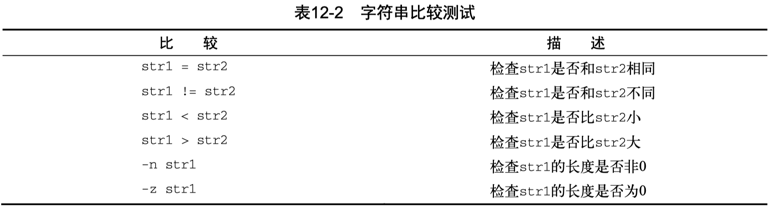
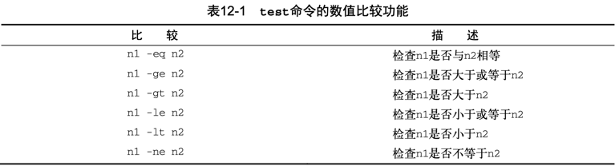
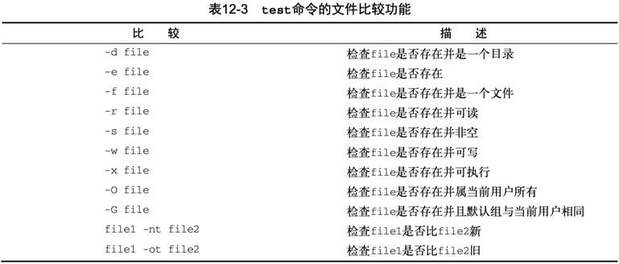

Linux Shell Program - test
Linux 下的 Shell 编程之比较和测试表达式。
到目前为止，在 if 语句中看到的都是普通shell命令。
你可能想问，if-then 语句是否能测试命令退出状态码之外的条件呢？
答案是不能。但在 bash shell 中有个好用的工具可以帮你通过 if-then 语句测试其他条件。
test [（条件测试）#
$ man test
NAME
test, [ – condition evaluation utility
SYNOPSIS
test expression
[ expression ]
DESCRIPTION
The test utility evaluates the expression and, if it evaluates to true, returns a zero
(true) exit status; otherwise it returns 1 (false). If there is no expression, test also
returns 1 (false).
test 命令的格式非常简单：
condition 是 test 命令要测试的一系列参数和值。
当用在 if-then 语句中时，test 命令看起来是这样的：
test 命令提供了在 if-then 语句中测试不同条件的途径。
- 如果条件成立，test 命令就会退出并返回退出状态码0，if 语句会被执行。
- 如果条件不成立，test 命令就会退出并返回非零的退出状态码，if 语句不会被执行。
- 如果不写 condition 部分，它会以非零的退出状态码退出，将执行 elif/else 语句块。
bash shell 提供了另一种等效的写法，使用方括号替代 test。
Warning
注意：左方括号之后和右方括号之前必须添加空格，否则会报语法错误！
test 命令（方括号 [ ]）可以判断三类条件：
- 字符串比较：e.g.,
test string,test -n string,test s1 = s2 - 数值比较：e.g.,
test n1 -eq n2,test n1 -lt n2,test n1 -gt n2 - 文件属性判断：e.g.,
test -f file,test file1 -nt file2
非空判断#
test expression 或 if [ condition ] 可用于变量判空：
变量 set 且有值才返回 0（true）；否则，变量 set 无值（null）或 unset 未定义，则返回 1（false）。
# if test $isAtHome; then echo "isAtHome" ; fi
Ξ ~ → if [ $isAtHome ] ; then echo "isAtHome" ; fi
isAtHome
# if test $isAtOffice; then echo "isAtOffice" ; fi
Ξ ~ → if [ $isAtOffice ] ; then echo "isAtOffice" ; fi
Ξ ~ →
字符串比较#
条件测试还允许比较字符串值。比较字符串比较烦琐，你马上就会看到。

[ -n string ]：测试字符串非空，成立返回0；[ -z string ]：测试字符串为空，成立返回0；
对于命令执行的返回状态码，也可按字符串形式进行判断：if [ "$?" = "0" ] or if [ "$?" != "0" ]。
以下针对 $isAtOffice 的 -n/-z 判断均成立！？
Ξ ~ → if [ -n $isAtOffice ] ; then echo "isAtOffice" ; fi
isAtOffice
# 或者
Ξ ~ → if [ -z $isAtOffice ] ; then echo "not isAtOffice" ; fi
not isAtOffice
Note
当 isAtOffice 未定义，为 unset/undefined 状态时，参数2扩展展开为空，测试表达式只剩参数1--测试运算符（operator flags），退化成了 test string/[ string ]。运算符 -n/-z 被视作非空字符串，返回0（true）。
针对判断变量非空的情况，可以省去 -n，直接用 test string/[ string ] 来判断 string 有定义且有值（set and not null）。
或者对变量引用添加双引号明确字符串化再判断：
Ξ ~ → if [ -n "$isAtOffice" ] ; then echo "isAtOffice" ; fi
Ξ ~ →
Ξ ~ → if [ -z "$isAtOffice" ] ; then echo "not isAtOffice" ; fi
not isAtOffice
当然，也可以改写成判等空字符串：test "$isAtOffice" = ""；test "$isAtOffice" != ""。
$ man bash
CONDITIONAL EXPRESSIONS
string1 == string2
True if the strings are equal. = may be used in place of == for strict POSIX compliance.
另一个案例：MacBook 上一般没有有线网卡，执行 awk 匹配为空，打印 eth_dev 为空：
$ eth_dev=$(networksetup -listallhardwareports | awk '/Hardware Port: Ethernet/{getline; print $NF}')
$ echo $eth_dev
但是 [ -n $eth_dev ] 测试为真：
原因是 awk 未匹配，实际上不会执行变量定义（及赋值）。修改为 [ -n "$eth_dev" ] 对于 unset 或 null 值变量，双引号内部解引用为空串。
Note
对于 test/方括号 中对变量的引用，建议总是对解引用添加双引号，兼顾变量 unset 的情况，确保扩展展开后的测试安全性。
- :
if [ -n $var ]; then echo "not empty" ; fi - : if [ -n "$var" ]; then echo "not empty" ; fi
关于 bool#
everything is a string in Bash
In the Bash shell, everything is fundamentally treated as a string. Unlike typical programming languages that use strict data types like integers or floats, Bash is a character-based interpreter.
Here is how that "everything is a string" philosophy works in practice:
- Variables are Typeless: When you define a variable, Bash stores it as a sequence of characters.
- Numbers are Just "Special" Strings: Bash only treats a string as a number when you explicitly use it in a mathematical context.
- Strings as Commands and Arguments: The shell's primary job is to take a single input string and break it down into a list of strings to pass to a command.
shell有bool运算么：在shell脚本中没有布尔值的概念，只能按照字符串处理。
How can I declare and use Boolean variables in a shell script?
the_world_is_flat=true
# ...do something interesting...
if [ "$the_world_is_flat" = true ] ; then
echo 'Be careful not to fall off!'
fi
Say we have the following condition.
In the following cases2, this condition will evaluate to true and execute the nested command.
# Variable var not defined beforehand. Case 1
var='' # Equivalent to var="". # Case 2
var= # Case 3
unset var # Case 4
var='<some valid command>' # Case 5
What I do recommend:
Here are ways I recommend you check your so-called "Booleans". They work as expected.
my_bool=true
if [ "$my_bool" = true ]; then
if [ "$my_bool" = "true" ]; then
if [[ "$my_bool" = true ]]; then
if [[ "$my_bool" = "true" ]]; then
if [[ "$my_bool" == true ]]; then
if [[ "$my_bool" == "true" ]]; then
if test "$my_bool" = true; then
if test "$my_bool" = "true"; then
数值化比较#
使用 test 命令最常见的情形是对两个数值进行比较，数值条件测试可以用在数字和变量上。

对于命令执行的返回状态码，可按数值形式进行判断：if [ $? -eq 0 ] or if [ $? -ne 0 ]。
文件属性判断#
最后一类比较测试很有可能是 shell 编程中最为强大、也是用得最多的比较形式。它允许你测试 Linux 文件系统上文件和目录的状态。

Check if a directory exists in a shell script
Linux / UNIX: Find Out If a Directory Exists or Not
- 以下脚本使用
-d判断目录是否存在，再根据其存在性执行不同的策略：
# 当前目录下如果有 `forms-debug` 文件夹则进入，否则先创建（且成功）再进入。
([ -d forms-debug ] || mkdir forms-debug) && cd forms-debug
括号的使命令列表变成了进程列表，生成了一个子shell来执行对应的命令。
- 参考 Create Permanent aliases，考虑将常用的便捷命令收集在
~/.bash_aliases，然后在~/.bashrc或~/.zshrc中判断该文件存在且有效后 source 载入。
- 在
/etc/zprofile和/etc/profile中使用-x测试脚本可执行性，然后 eval 执行：
$ cat /etc/zprofile
# System-wide profile for interactive zsh login shells.
# Setup user specific overrides for this in ~/.zprofile. See zshbuiltins
# and zshoptions for more details.
if [ -x /usr/libexec/path_helper ]; then
eval `/usr/libexec/path_helper -s`
fi
- 在
/etc/profile中使用-r测试脚本可读性，然后 source 引入：
$ cat /etc/profile
# System-wide .profile for sh
if [ -x /usr/libexec/path_helper ]; then
eval `/usr/libexec/path_helper -s`
fi
if [ "${BASH-no}" != "no" ]; then
[ -r /etc/bashrc ] && . /etc/bashrc
fi
- 在 transfer.sh 中使用
! -e排查捕获处理文件不存在的情形：
if [ ! -e "$file" ]; then # 文件不存在
echo "$file: No such file or directory" >&2
return 1
fi
if [ -d "$file" ]; then # 是目录
# ...
fi
复合条件测试#
if-then 语句允许使用布尔逻辑运算符 && 和 || 来组合测试多个 test, [ 表达式：
- [ condition1 ] && [ condition2 ]
- [ condition1 ] || [ condition2 ]
- AND 布尔运算：所有条件都同时满足时 then 部分才会执行。条件1不满足即短路退出跳转执行 else 分支。
- OR 布尔运算：任一条件满足，then 部分都会执行。条件1满足即短路退出，无需再判断条件2。
在一个 test, [ 中括号表达式中，可使用 -a 或 -o 连接多个测试条件。
$ man test
These primaries can be combined with the following operators:
! expression True if expression is false.
expression1 -a expression2
True if both expression1 and expression2 are true.
expression1 -o expression2
True if either expression1 or expression2 are true.
( expression )
True if expression is true.
The -a operator has higher precedence than the -o operator.
关于两者的区别，man test BUGS 部分提到，expression1 -a expression2 会同时执行两个表达式，即不支持短路特性。
建议采用逻辑运算符（&&、||）连接 test, [] 表达式（[ condition1 ] && [ condition2 ]）更高效。
$ man test
Both sides are always evaluated in -a and -o. For instance, the writable status of file
will be tested by the following command even though the former expression indicated false,
which results in a gratuitous access to the file system:
[ -z abc -a -w file ]
To avoid this, write
[ -z abc ] && [ -w file ]
ShellCheck: SC2166: Prefer `[ p ] && [ q ]` as `[ p -a q ]` is not well-defined. And likewise, prefer [ p ] || [ q ] over [ p -o q ].
返回值和执行结果综合判断示例：
is_iosdeploy_installed()
{
# ios-deploy -V | read ios_deploy_version # wrong???
ios_deploy_version=$(ios-deploy -V)
if [ $? -eq 0 ] && [ $ios_deploy_version ]
then
echo "ios-deploy version: $ios_deploy_version"
return 0
else
echo "ios-deploy not found, PLS install first!!!"
return 1
fi
}
if is_iosdeploy_installed
then
ios_deploy_device=`ios-deploy -c`
# if [ $? -eq 0 -a $ios_deploy_device ] # [: too many arguments
# if [[ $? -eq 0 ]] && [[ $ios_deploy_device ]] # right, not recommended
# if [ $? -eq 0 ] && [ -n "$ios_deploy_device" ]
if [ $? -eq 0 ] && [ $ios_deploy_device ]
then
echo $ios_deploy_device
main $@ # $*
else
echo "ios-deploy detect failed!"
fi
fi
除了 test [ ] 测试命令（builtin commands），BASH 中的 CONDITIONAL EXPRESSIONS 还支持 Compound Commands，例如 [[ expression ]] 双中括号表达式。
[[ ]] 复合测试#
man bash - Compound Commands - [[ expression ]]
$ man bash
CONDITIONAL EXPRESSIONS
Compound Commands
Conditional expressions are used by the [[ compound command and the test and [ builtin commands to
test file attributes and perform string and arithmetic comparisons. Expressions are formed from
the following unary or binary primaries.
[[ expression ]]
Return a status of 0 or 1 depending on the evaluation of the conditional expression
expression. Expressions are composed of the primaries described below under CONDITIONAL
EXPRESSIONS. Word splitting and pathname expansion are not performed on the words between
the [[ and ]]; tilde expansion, parameter and variable expansion, arithmetic expansion,
command substitution, process substitution, and quote removal are performed. Conditional
operators such as -f must be unquoted to be recognized as primaries.
When the == and != operators are used, the string to the right of the operator is considered
a pattern and matched according to the rules described below under Pattern Matching. If the
shell option nocasematch is enabled, the match is performed without regard to the case of
alphabetic characters. The return value is 0 if the string matches (==) or does not match
(!=) the pattern, and 1 otherwise. Any part of the pattern may be quoted to force it to be
matched as a string.
An additional binary operator, =~, is available, with the same precedence as == and !=.
When it is used, the string to the right of the operator is considered an extended regular
expression and matched accordingly (as in regex(3)). The return value is 0 if the string
matches the pattern, and 1 otherwise. If the regular expression is syntactically incorrect,
the conditional expression's return value is 2. If the shell option nocasematch is enabled,
the match is performed without regard to the case of alphabetic characters. Substrings
matched by parenthesized subexpressions within the regular expression are saved in the array
variable BASH_REMATCH. The element of BASH_REMATCH with index 0 is the portion of the
string matching the entire regular expression. The element of BASH_REMATCH with index n is
the portion of the string matching the nth parenthesized subexpression.
Expressions may be combined using the following operators, listed in decreasing order of
precedence:
( expression )
Returns the value of expression. This may be used to override the normal precedence
of operators.
! expression
True if expression is false.
expression1 && expression2
True if both expression1 and expression2 are true.
expression1 || expression2
True if either expression1 or expression2 is true.
The && and || operators do not evaluate expression2 if the value of expression1 is
sufficient to determine the return value of the entire conditional expression.
如 manual 所示，[ ] 和 [[ ]] 都支持复合条件测试，都可以用在 Command Lists 中。
[ ]是命令，依赖参数个数；[[ ]]是语法结构，语义更稳定。- 在现代 Bash 脚本中，要避免使用裸
[ $var ]，建议使用[ "$var" ]或[[ $var ]]。
当 var 未定义（unset, i.e. undefined）时，[ -n $var] 展开为 [ -n ] 返回 0（true），建议改用更安全的双方括号形式 [[ -n $var ]]。
另外，相比 [ expression ]，[[ expression ]] 增加支持模式匹配：
- the right of the operator
==and!=is considered a pattern - the right of the operator
=~is considered an extended regular expression
参考 Linux Shell Program - string 中的字符串匹配示例。
vim-interaction.plugin.zsh 中判等串联执行命令案例：
# If before or after commands begin with : and don't end with <cr>, append it
[[ ${after} = :* && ${after} != *\<cr\> ]] && after+="<cr>"
[[ ${before} = :* && ${before} != *\<cr\> ]] && before+="<cr>"
# Open files passed (:A means abs path resolving symlinks, :q means quoting special chars)
[[ $# -gt 0 ]] && files=':args! '"${@:A:q}<cr>"
Parameter Expansion（参数扩展）#
参考 man bash - Parameter Expansion（参数扩展）章节
$ man bash
In each of the cases below, word is subject to tilde expansion, parameter expansion, command
substitution, and arithmetic expansion. When not performing substring expansion, bash tests for a
parameter that is unset or null; omitting the colon results in a test only for a parameter that is
unset.
${parameter:-word}
Use Default Values. If parameter is unset or null, the expansion of word is substituted.
Otherwise, the value of parameter is substituted.
${parameter:=word}
Assign Default Values. If parameter is unset or null, the expansion of word is assigned to
parameter. The value of parameter is then substituted. Positional parameters and special
parameters may not be assigned to in this way.
${parameter:?word}
Display Error if Null or Unset. If parameter is null or unset, the expansion of word (or a
message to that effect if word is not present) is written to the standard error and the shell,
if it is not interactive, exits. Otherwise, the value of parameter is substituted.
${parameter:+word}
Use Alternate Value. If parameter is null or unset, nothing is substituted, otherwise the
expansion of word is substituted.
POSIX 文档中的这张表说得很清楚：
| parameter Set and Not Null |
parameter Set But Null |
parameter Unset |
|
|---|---|---|---|
| ${parameter:-word} | substitute parameter | substitute word | substitute word |
| ${parameter-word} | substitute parameter | substitute null | substitute word |
| ${parameter:=word} | substitute parameter | assign word | assign word |
| ${parameter=word} | substitute parameter | substitute null | assign word |
| ${parameter:?word} | substitute parameter | error, exit | error, exit |
| ${parameter?word} | substitute parameter | substitute null | error, exit |
| ${parameter:+word} | substitute word | substitute null | substitute null |
| ${parameter+word} | substitute word | substitute word | substitute null |
取默认值#
${parameter:-word}: Use Default Values if unset or null.
${var:-default}: returndefaultif var is unset or null, else return var${var-default}: returndefaultif var is unset (even null), else return var
How variables inside braces are evaluated
${a:-default}: 如果变量 a 未定义或为空（unset or null），则扩展展开为-后的默认值。${a-default}: 仅当变量 a 未定义（unset or undefined）时，才扩展展开为-后的默认值。
This is all described in the bash(1) manpage, and in POSIX.
- 变量未定义：
# 未定义变量
~ $ unset a
# 变量未定义，返回default
~ $ echo "${a:-default}"
default
# 变量未定义，返回default
~ $ echo "${a-default}"
default
- 变量有定义，但为空值（空字符串）：
# 定义变量，但赋值为空
~ $ a= # or a=''
# 变量a已定义，但值为空，返回default
~ $ echo "${a:-default}"
default
# 变量a已定义，返回a——空值
~ $ echo "${a-default}"
~ $
- 定义变量，且非空值，返回 a 不执行替换：
in /etc/zshrc: If ZDOTDIR is unset(or empty), HOME is used instead.
/etc/profile 中判断 BASH 是否定义过（可能未赋值），再判断 /etc/bashrc 可读性，进而执行 .（source）导入 /etc/bashrc。
- 这里的
no仅仅是个辅助判断占位，可替换为任何字符(串)，例如[ "${BASH-x}" != "x" ]。
如果
$1存在并且不为空，则 a=$1；否则（未定义或为空），则 a=false。
Usage of :- (colon dash) in bash
${PUBLIC_INTERFACE:-eth0}: If$PUBLIC_INTERFACEexists and isn't null, return its value, otherwise return "eth0".
zsh-autosuggestions/INSTALL：如果变量 ZSH_CUSTOM 未定义或为空，则替换为 ~/.oh-my-zsh/custom。
git clone https://github.com/zsh-users/zsh-autosuggestions ${ZSH_CUSTOM:-~/.oh-my-zsh/custom}/plugins/zsh-autosuggestions
我们来看一下 How to read from a file or standard input in Bash 这个问题，优先从文件读入参数，否则从stdin接受输入。
Read either the first argument or from stdin
file=${1--}（file=${1:--}，等效于 ${1:-/dev/stdin}），可理解为 [ "$1" ] && file=$1 || file="-"。
以下脚本，从文件\(1或stdin读取数据传给cat，然后输出到文件\)2或stdout。
赋默认值#
${parameter:=word}: Assign Default Values if unset or null.
${var:=default}: var=defaultif var is unset (i.e. undefined) or null, then return var${var=default}: var=defaultonly if var is unset (i.e. undefined), then return var
变量未定义或为空，赋默认值：
# 变量未定义，赋默认值
~ $ unset a
~ $ echo "${a:=default}"
default
~ $ echo $a
default
# 变量为空值，赋默认值
~ $ echo $a
default
~ $ a=''
~ $ echo "${a:=default}"
default
以下是一段来自生产实践中的sh脚本，基于 := 来给未定义或空值变量赋默认值兜底：
# 兜底启动角色和模式
# 当作命令执行，报错
${role:=client}
zsh: command not found: client
echo $role
client
# 在赋值表达式前添加冒号，否则设置了 set -e 会退出
: ${role:=client}
echo $role
client
echo "mode = ${mode:=debug}"
# 兜底默认服务和代理端口
: "${web_port:=8080}"
: "${proxy_port:=8010}"
显示错误#
${parameter:?word}: Display Error if Null or Unset.
${var:?error}: display error and exit if var is unset or null else return var${var?error}: display error and exit if var is unset else return var
以下sh脚本中调用get_lan_ip函数，预期其中会定义未export的全局变量lan_ip。
由于无法确保第三方脚本中的其他函数是否定义了该变量，ShellCheck 会报引用安全警告：
SC2154: lan_ip is referenced but not assigned.
如果局域网 LAN IP 获取不到，往往意味着网络服务不可用，可以使用 :? 进行判空警告。
这样，如果 lan_ip 未定义或为空值，则直接报错中止退出（exit 1）。
替代值#
${parameter:+word}: Use Alternate Value if set.
${var:+value}: returnvalueif var is set and not null else return null${var+value}: returnvalueif var is set (even null) else return null
The + form might seem strange, but it is useful when constructing variables in several steps:
will add : before /blah/bin only if PATH is non-empty, which avoids having a path starting with :.
- 如果 PATH 未定义或为空，则什么也不做，第一个环境变量不用添加冒号前缀分隔符；
- 如果 PATH 有定义或非空，则相当于在现有 PATH 后面追加变量：
PATH=${PATH}:/blash/bin；
map_has 函数检查键是否存在：
- 如果变量已定义（set, defined），即使值为空，替换为
x（满足 -n 非空），eval 退出码为零 - 否则（unset, undefined），替换为空值，eval 退出码非零
function map_has() {
local key="$1"
local var_name="${prefix}${key}"
eval "[[ -n \${$var_name+x} ]]"
}
references#
Bash字符串判断
逻辑判断和字符串比较
shell 编程：:后面跟-=?+的意义
shell之变量替换：:=、=、:-、-、=?、?、:+、+句法